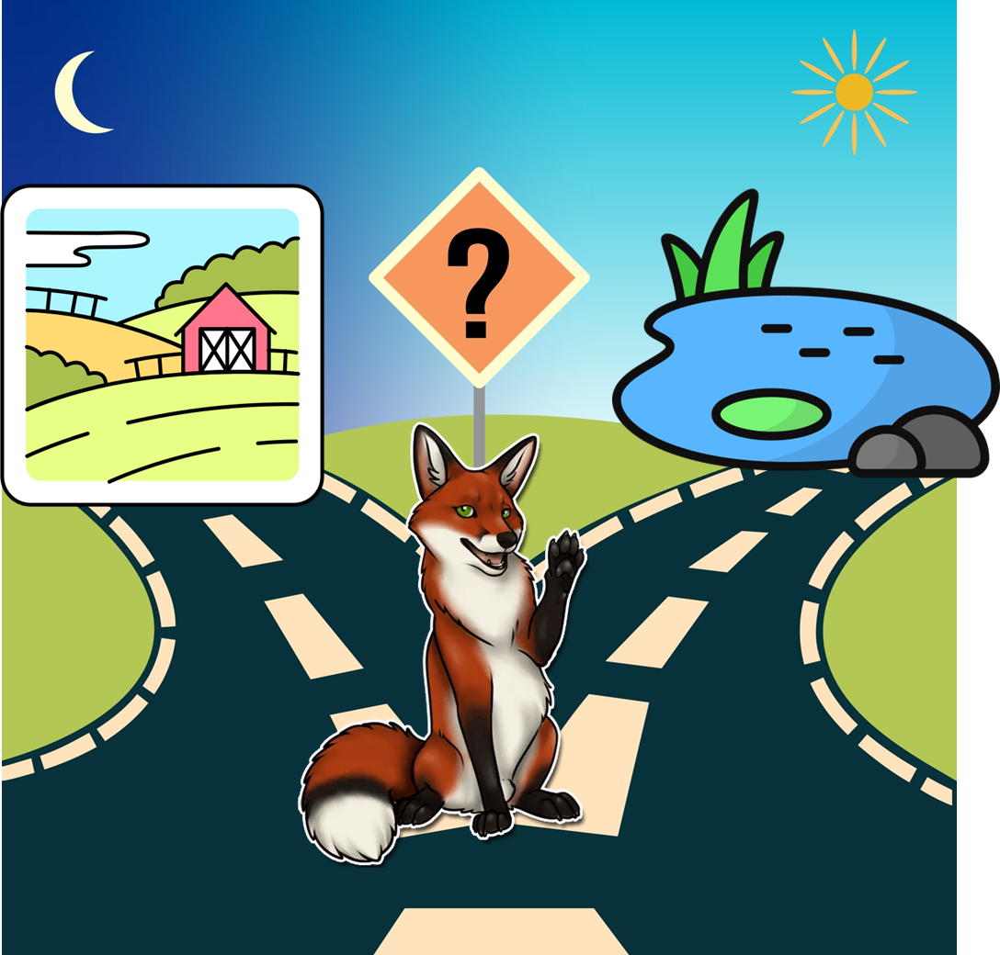

📅 17 марта 2026
В задачах такого типа необходимо уметь логически рассуждать и перебирать всевозможные варианты. Часто удобно отбросить заведомо неподходящие варианты и рассмотреть оставшиеся.
Обращаем ваше внимание на то, что если даже вы нашли непротиворечивый вариант, то это не значит, что можно заканчивать решение задачи. Нет, необходимо рассмотреть все возможные варианты или доказать, что других решений нет.
Большинство задач данного раздела будут про рыцарей (они всегда говорят правду), лжецов (всегда лгут) и хитрецов (иногда говорят правду, а иногда лгут).
На развилке двух тропинок в лесу ты встретил очень хитрую Лису, которая всегда лжёт. Лиса знает, какая из двух тропинок ведёт к деревне, а какая — в болото.
Попробуй придумать один вопрос, на который может быть только ответ «да» или «нет», позволяющий по ответу определить, какая тропинка ведёт в деревню. Объясни, почему твой вариант подходит.

Назовём тропинки левой и правой. Можно задать вопрос про левую тропинку:
«Эта тропинка ведёт в деревню?»
Объясним, почему этот вопрос подходит:
1) Если Лиса ответит «да», то это ложь, эта тропинка ведёт в болото. Значит, в деревню ведёт правая тропинка.
2) Если Лиса ответит «нет», то это ложь, значит, эта тропинка ведёт в деревню.
В обоих случаях по ответам Лисы можно однозначно определить, какая тропинка ведёт к деревне.
Ответ: «Левая тропинка ведёт в деревню?»
Чтобы узнать, что такое «высказывание», «истинность и ложность высказывания», ознакомься со следующей статьёй:
Выберите из всех предложений высказывания:
а) Когда заканчиваются зимние каникулы?
б) Учебный год в России начинается 1 сентября.
в) Какая красота!
г) Каир — столица Египта.
д) Сумма пяти и восемнадцати.
е) Трижды восемь — двадцать восемь.
Какие это высказывания: истинные или ложные?
Высказывания: б), г), е)
Не являются высказываниями: а), в), д)
Истинность:
б) Истинное — учебный год в России действительно начинается 1 сентября.
г) Истинное — Каир действительно столица Египта.
е) Ложное — трижды восемь — это 24, а не 28.
💡 Советы по решению задач с высказываниями
- Если в задаче есть предложение, которое может быть истинным или ложным, то можно по очереди проверить обе возможности.
- Если в задаче требуется придумать вопрос, то можно предложить варианты и выбрать тот, который подходит ко всем условиям задачи.
- Если нужно придумать вопрос, на который один и тот же персонаж даёт разные ответы, то можно определить, что изменяется между вопросами со временем.
- В задаче могут быть несколько предложений, которые могут быть истинными или ложными. Важно по очереди проверить всевозможные случаи (то есть сделать перебор различных вариантов).
Хитрая Лиса решила стать честной и стала работать журналистом. В статье о результатах забега, в котором участвовали три кролика — Белый, Серый и Рыжий — она написала:
«Белый Кролик прибежал на финиш первым», «Серый Кролик прибежал после него».
Как ни старалась Лиса, а всё равно в одном из этих предложений написала ложь.
Кто выиграл забег?
До царя дошла весть, что кто-то из трёх богатырей убил Змея Горыныча. Приказал царь им явиться ко двору. Молвили богатыри:
Илья Муромец: «Змея убил Добрыня Никитич».
Добрыня Никитич: «Змея убил Алёша Попович».
Алёша Попович: «Я убил Змея».
Известно, что только один богатырь сказал правду, а двое других слукавили.
Кто убил Змея?
Поскольку Добрыня Никитич и Алёша Попович утверждают одно и то же (что Змея убил Алёша), а правду сказал только один богатырь, они оба лукавят.
Значит, правду сказал Илья Муромец и Змея убил Добрыня Никитич.
Ответ: Змея Горыныча убил Добрыня Никитич.
Истинно или ложно высказывание: «Нет правил без исключения»?
Если правило «Нет правил без исключения» истинно, то для этого правила есть исключение, а именно должно существовать правило, в котором нет исключений.
Получаем, что правило «Нет правил без исключения» ложно.
Ответ: ложно.
Племя людоедов поймало Робинзона Крузо. Вождь сказал:
«Мы бы рады отпустить тебя, но по нашему закону ты сначала должен произнести какое-нибудь утверждение. Если оно окажется истинным, мы съедим тебя. Если оно окажется ложным, тебя съест наш лев».
Помогите Робинзону.
Робинзон может сказать: «Меня съест ваш лев».
Покажем, что это утверждение не может оказаться истинным и не может оказаться ложным:
• Если это утверждение истинно, то Робинзона должны съесть людоеды, но тогда его не съест лев и утверждение окажется ложным.
• Если это утверждение ложно, то Робинзона должен съесть лев, но тогда это утверждение окажется истинным.
Так как утверждение не оказалось истинным, то Робинзона не съедят людоеды. Так как утверждение не оказалось ложным, то Робинзона не съест лев.
Ответ: Робинзон должен сказать: «Меня съест ваш лев».
В Стране чудес проводилось следствие по делу об украденной муке. На суде Мартовский Заяц заявил, что муку украл Болванщик. В свою очередь Болванщик и Соня дали показания, в которых указали на вора, но эти показания по каким-то причинам не были записаны.
В ходе судебного заседания выяснилось, что муку украл лишь один из трёх подсудимых и что только он дал правдивые показания.
Кто украл муку?
Если бы вором был Мартовский Заяц, то он указал бы на себя, значит, Мартовский Заяц не вор.
Так как только вор сказал правду, то Мартовский Заяц солгал, значит, Болванщик не вор.
Остаётся единственный возможный вариант: Соня — вор.
Ответ: муку украла Соня.
Ковбой Джо приобрёл в салуне несколько бутылок Кока-Колы по 40 центов за штуку, несколько сэндвичей по 24 цента и 2 бифштекса. Бармен сказал, что с него 20 долларов 5 центов.
Ковбой Джо высказал бармену всё, что он думает о его умении считать.
Действительно ли бармен ошибся?
Пусть:
• x — число бутылок Колы,
• y — число сэндвичей,
• z — цена одного бифштекса в центах (целое число).
Тогда: 40x + 24y + 2z = 2005
Смотрим на левую часть:
• 40x — делится на 2 (чётное),
• 24y — делится на 2 (чётное),
• 2z — делится на 2 (чётное).
Значит, левая часть всегда чётная (сумма трёх чётных чисел).
А правая часть 2005 — нечётная (заканчивается на 5).
Вывод: равенство чётного и нечётного невозможно. Значит, бармен точно ошибся.
Ответ: да, бармен ошибся.
Когда учительница ругала Дениса за плохой почерк, он сказал:
«У всех великих людей был плохой почерк, значит, я великий человек.»
Прав ли он?
Это классическая ошибка «обратного следования».
В логике это выглядит так:
Если человек великий → у него плохой почерк.
Но из того, что у человека плохой почерк, НЕ следует, что он великий.
Плохой почерк может быть у кого угодно, даже у того, кто вообще не пишет.
Ответ: Денис не прав. Его вывод логически неверен.
У императора украли перец. Как известно, те, кто крадут перец, всегда лгут. Пресс-секретарь заявил, что знает, кто украл перец.
Виновен ли он?
Рассмотрим два варианта:
1️⃣ Пресс-секретарь говорит правду → он действительно знает вора. Но если он говорит правду, значит он не крал перец (потому что воры всегда лгут, а он не лжёт). Значит, он не виновен.
2️⃣ Пресс-секретарь лжёт → тогда он не знает вора (потому что его заявление ложно). Но если он лжёт, то по условию он обязан быть вором (так как воры всегда лгут). Значит, он виновен.
Но есть нюанс:
В условии сказано: «Те, кто крадут перец, всегда лгут».
Обратное («лгуны всегда крадут перец») не утверждается! Человек может лгать по другим причинам, но перец не красть.
Поэтому из его фразы нельзя сделать однозначный вывод.
Ответ: нельзя определить, виновен ли он.
Что каждый из них ответит на вопрос: «Твой брат врёт?»
Антон честно скажет, что его брат врёт, а Максим соврёт, что его брат врёт.
Ответ: оба ответят «да».
Вера сказала: «Загаданное число наверняка меньше 60».
Надя сказала: «А я думаю, что число меньше 59».
Но только одна из девочек оказалась права.
Какое число загадал Дима?
Если права Надя, то права и Вера (потому что если число меньше 59, то оно точно меньше 60).
Значит, Надя ошиблась и загадано число 59.
Ответ: 59.
Все надписи оказались неправильными.
Какое варенье налили в банку «клубничное»?
Так как все надписи неправильные, то в третьей банке не может быть ни малиновое, ни клубничное варенье. Значит, там смородиновое варенье.
Тогда клубничное и малиновое должны быть в первых двух банках. А так как надписи неправильные, то в банке «клубничное» на самом деле малиновое варенье.
Ответ: малиновое.
Беня (Вене): «Ты лжец».
Женя (Бене): «Сам ты лжец».
Сеня (Жене): «Да они оба лжецы. Впрочем, и ты тоже».
Кто из них лжец, а кто рыцарь?
Идея: Перебрать все варианты и отобрать непротиворечивые. Перебор начать с предположения о том, что Сеня — рыцарь.
Решение:
Так как Сеня выдал наибольшее количество информации, перебор начнём с него.
• Если Сеня — рыцарь, то согласно его высказываниям трое остальных — лжецы. Но тогда высказывание Бени о том, что Веня — лжец, истинно. Противоречие. Значит, Сеня — лжец.
• Так как Сеня — лжец, то ложны его высказывания «Да они оба лжецы» (о Вене и Бене) и «Впрочем, и ты тоже» (о Жене).
Получается, что хотя бы один среди Вени и Бени является рыцарем, а Женя точно рыцарь.
• Так как Женя — рыцарь, то его высказывание истинно, следовательно, Беня — лжец.
• Но Беня сказал о Вене, что тот лжец, значит, Веня — рыцарь.
Ответ: Веня и Женя — рыцари, а Беня и Сеня — лжецы.